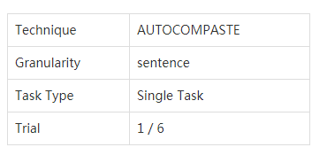

Dear participant , please read the instructions before the experiment.
1. The overall flow of the experiment is like this:
2. How to use Autocompaste:
The screen is split into two sections; the left section contains the conditions of the experiment while the right section contains the text editor window and the windows containing text.
Left Section
The Technique, Granularity, task mode and Trial number will be displayed.
The words in the red box are called the stimuli. This is the target text that you need to enter into the Text Editor window using one of the two techniques.
Right Section
There are two kinds of windows in the right section:
1) Text Editor window, and
2) Articles window.
The Text Editor window is meant for you to enter their response to the stimuli using either one of the proposed copy-pasting techniques. The Articles windows contain text in various forms (point-form / essay). The text corresponding to the stimuli will be highlighted in yellow for easy identification in the cases of the TRADITIONAL copy-pasting technique.
When the AUTOCOMPASTE technique is active, typing three characters or more in the Text Editor will show a dropdown list of possible sentences that contain the characters/sentence that you have just entered, which are extracted from the contents of the open windows. Pressing the ↑/↓ buttons on the keyboard will scroll through the list of suggestions. Press enter to select a suggestion and the text editor will display the full selected sentence.
After selecting a sentence, pressing ←/→ button right after pressing enter, you can delete/append the next few sentences of the article to the Text Editor. Pressing enter or space would mean pasting the final text to the system.
After you are satisfied with the text entered in the text editor, pressing the Next Task button will load the next trial with its respective conditions.